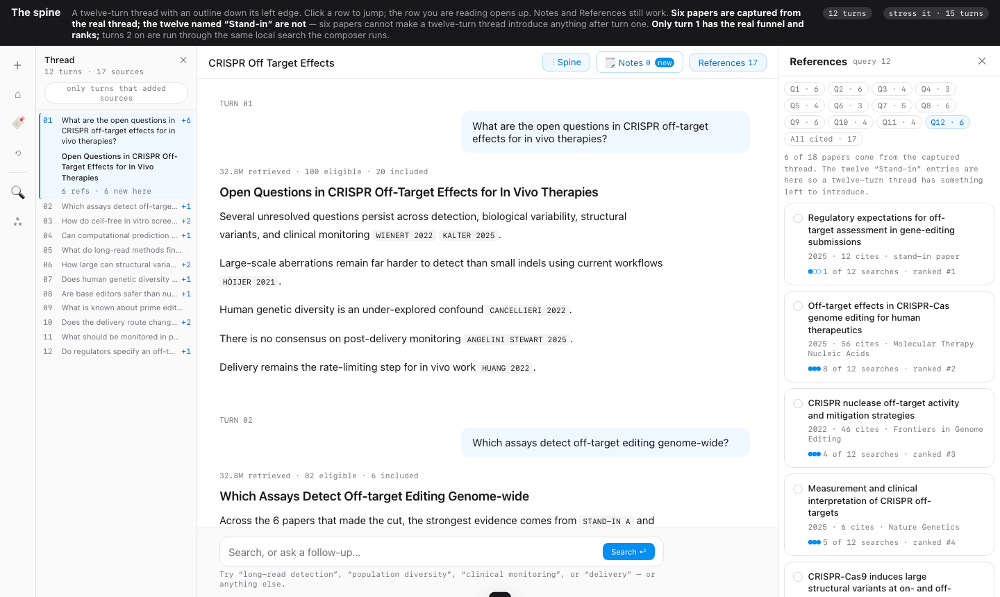
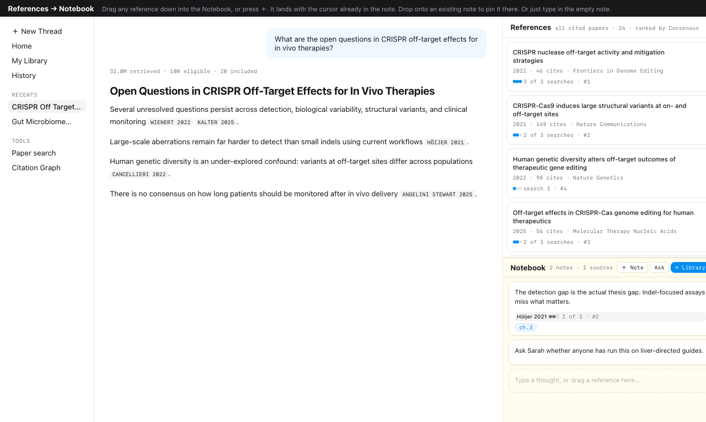

Process · explorations that did not ship
Both are clickable and run on the same real CRISPR thread as the concept. One was rejected outright, the other was rebuilt somewhere else. Each is here because what it ruled out is what the finished design now rests on. The side index came from a parallel worktree that was never merged.

What shape does a long thread have?
Gives a Notion-style outline of every turn, each row carrying the count of sources that turn introduced, so you can see where the thread stopped learning and jump instead of scroll. Twelve turns, and a stress mode that pushes it to fifteen.
Costs it says nothing about your own activity. It maps what the machine did, not what you decided. Past about twenty turns the map needs its own scrollbar.
WHY IT DIED It indexes the transcript, and the transcript is not what gets lost. Navigation was never the pain: a researcher who can jump to turn 7 still cannot say why the paper in it mattered. This is what pushed the work off structure and onto the note.
Open the prototype →

Can one column hold both the machine’s list and yours?
Gives the shortest possible capture gesture: drag a reference straight down into the Notebook, or press ＋ and it lands with the cursor already in the note. Drop onto an existing note to pin it there, or just type in the empty one.
Costs the two halves compete for the same height. The moment References is long enough to be worth reading, the Notebook is a sliver.
WHAT IT CHANGED The gesture survived and the layout did not. Two rounds later Notes moved beside References instead of beneath it, which is the arrangement in the final concept, because the move the whole thing turns on is dragging a reference into a note, and that cannot happen if opening one collapses the other.
Open the prototype →
Twenty-eight numbered prototypes across three parallel worktrees, and the rejects were worth more than the picks in every round. The pattern in both of these is the same: each added structure to a thread, an index or a second pane, and each found that structure was not the missing thing. What was missing was somewhere to put a reason, which is why the concept adds exactly one noun and no new navigation.
Both prototypes are live and drivable, on the same six captured papers and the same real
32.8M → 100 → 20 funnel as the concept. The side index is from the unmerged
explore/thread-structure branch; notes-below-references is round 3 of the main
line.
← all prototypes, newest first ·
the journey and the pains ·
the concept →